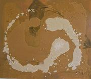
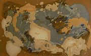
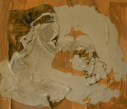

Art Ficciones (de)construidas
Ιστορίες (απο)δόμησης - Ficciones (de)construidas
Από 7 εώς 25 Μαίου - Del 7 al 25 de Mayo
Zona del Museo del centro cultural Tomas y valiente FUENLABRADA (Madrid)
Charis Paspallis’s wall installations in mixed media mirror the uncertainties affected by a hybrid everyday life, sacrificing individuality in the name of advancement, an ill-conceived modernity and an opportunistic mentality of disregarding “us” in order to please the “others”. An indeterminate identity, split between the local and the translocal is captured in a mélange made of rags of clothes, wires, cardboard paper and mud, all melted down in the ephemeral fluidity of commercial re-use and sale. The gushing mobility of an ochreish, grayish volcanic-like force, sweeps forms away in an ambiguous and liquid corporeality, infusing, at the same time, seeds of fecundity in the ostensibly, barren, waste land, awaiting rebirth. This, deliberately, structureless state of his installations is complemented by a solid construction of window frames, offering a view to the world of stability, serenity and calmness, an outlet from the emotional deadlock.
|  |
 |
 |
|
100x120 mixed media |
120x50 mixed media |
100x120 mixed media |